|
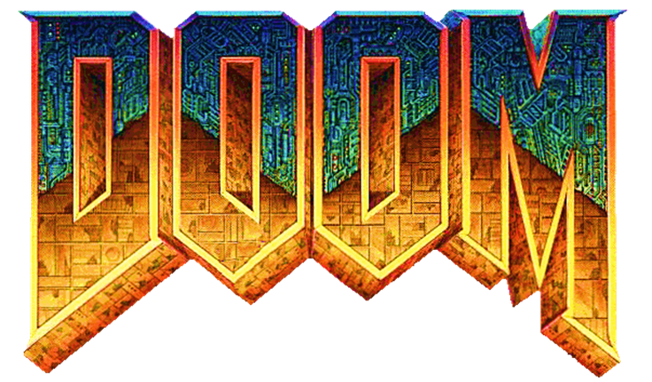
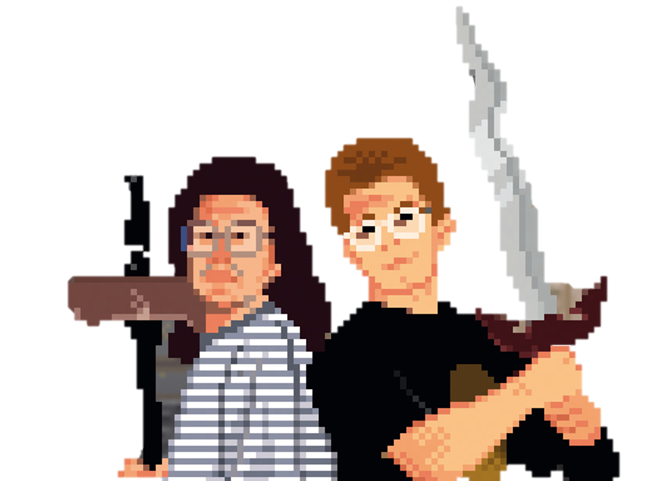
PABLO MORA
Contenidos
|
D |
oom es un
shooter en primera persona desarrollado y publicado por id Software el 10 de
diciembre de 1993, para la IBM DOS, siendo el primero de toda la saga Doom. El
jugador asume el rol de un soldado de marina espacial, denominado Doomguy, el
cual debe enfrentarse a hordas de zombies y demonios que quieren invadir el
planeta. En cada nivel, el jugador debe encontrar la ruta hacia la salida o
vencer al jefe final. Doom fue uno de los primeros juegos que incluyeron
gráficos 3D en los videojuegos.
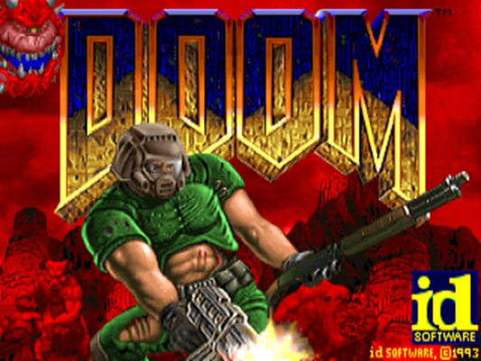
1 Pantalla de inicio de Doom (1993)
Doom
fue un éxito comercial y gozo de un buen acogimiento entre los críticos,
ganándose la reputación de ser uno de los juegos más influyentes de todos los
tiempos. Para 1999 había vendido un estimado de 3.5 millones copias y más de 20
millones de personas lo habían jugado. El juego tuvo un papel importante en el
esparcimiento de las comunidades videojugabilisticas en línea y condujo a la
creación de una gama de clones, los juegos doomlike, que luego pasarían a ser
un subgénero reconocido llamado juegos FPS, del inglés, (first person shooters)
o shooters en primera persona. Así como una robusta comunidad de modding
quienes han modificado y porteado el juego a una serie de plataformas de manera
extraoficial. El juego estuvo cargado de polémica desde su lanzamiento debido a
su alto nivel de violencia gráfica.
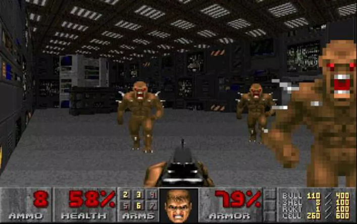
2 Captura del Episodio
"Knee-Deep in the Dead"
Doom es un shooter en primera persona con gráficos 3D. Si bien el entorno
se muestra con una perspectiva 3D, los enemigos y objetos son, en cambio,
sprites 2D renderizados en ángulos fijos. Una técnica denominada billboarding.
En el modo campaña, el jugador, mientras avanza niveles, se moverá por bases
militares en las lunas de marte y el infierno. Para finalizar un nivel, el
jugador debe atravesar áreas laberínticas para alcanzar la salida marcada en el
mapa. Los niveles están agrupados en nombres de episodios, con cada final de
episodio hay una pelea con el jefe final.
Al atravesar los niveles, el jugador debe enfrentar a una variedad de
enemigos, incluyendo demonios y zombies (humanos poseídos). Frecuentemente los
enemigos aparecen en largos grupos. Los cinco niveles de dificultad definen el
número de enemigos en pantalla y el daño que estos inflingen. Los monstruos
tienen un comportamiento simple: se desplazan hacia su oponente si los oyen o
escuchan y atacan mordiendo, rasguñando o utilizando bolas de fuego.
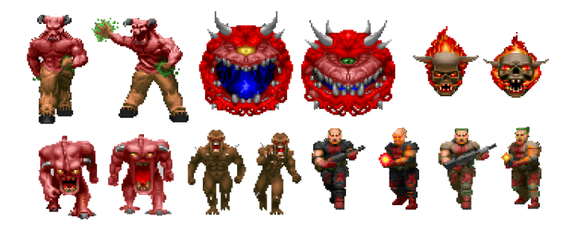
3 Sprites de Enemigos 2D
El
jugador debe gestionar su munición, salud y armadura al atravesar los niveles.
El jugador puede encontrar armas y munición regadas por los niveles o puede
recolectarlas de enemigos muertos, incluyendo pistolas, motosierras, rifles de
plasma y la BFG 9000. El jugador también se puede encontrar con lagos de
desechos tóxicos, techos que bajan y aplastan cosas, y puertas trancadas con
llave. Power ups incluyen vida, o puntos de armadura, computadora de mapeo,
invisibilidad parcial, un traje de radiación, invulnerabilidad, o superfuerza.
Códigos truco que permiten al jugador desbloquear todas las armas, caminar a
través de las paredes, o ser invulnerable.
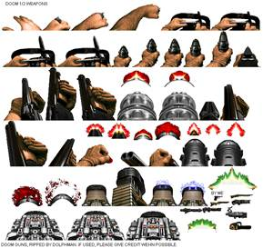
4 Sprites de Armas
Hay 2
modos multijugador, el cooperativo, en el cual de dos a cuatro jugadores forman
un equipo para completar la campaña principal y la deathmatch en la cual el
mismo número de jugadores compiten para eliminarse entre si la mayor numero de
veces posible. El multijugador originalmente se podía solo mediante una red LAN,
pero hoy en día existen diversos métodos para jugar en línea con otros
jugadores.
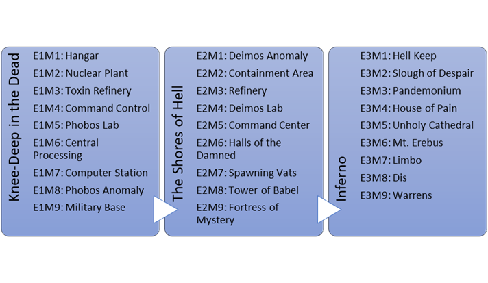
Doom está dividido en tres episodios, donde cada uno contiene 9
episodios. Los episodios son
"Knee-Deep in the Dead", "The Shores of Hell", y
"Inferno". Un
cuarto episodio "Thy Flesh Consumed", fue agregado en una versión
expandida, The Ultimate Doom, lanzado dos años después. La campaña de Doom
contiene muy poca historia, y se encuentra principalmente en el manual de
instrucciones y las descripciones de texto entre episodios.
En el futuro, un soldado de marina, considerado uno de los terrícolas más
experimentados en combate y preparados para la acción es destinado a una misión
en marte. Desde allí, se encarga de vigilar las instalaciones de desecho toxico
construidas por UAC (Union Aerospace Corporation), un conglomerado
multiplanetario y contratista militar, las cuales están siendo utilizadas por
la milicia para realizar experimentos secretos con viajes Inter dimensionales.
De pronto, algo malo ocurre y las criaturas del infierno son
teletransportadas mediante las puertas construidas por UAC en Deimos y Phobos.
Una defensiva para asegurar la base falla al intentar detener la invasión, y
las bases son rápidamente invadidas por monstruos. Seguidamente todo el
personal es asesinado o convertido.
Un destacamento militar viaja desde marte hasta Phobos para investigar el
incidente. El jugador tiene la tarea de asegurar el perímetro, mientras el
equipo de asalto y sus armas ingresan. Pronto la señal de radio se pierde y el
jugador descubre que él es el único sobreviviente. Al no ser capaz de pilotear
el transbordador en Phobos por sí mismo, la única forma de escapar es
adentrarse y pelear a través de los complejos de la base lunar.
En el episodio "Knee-Deep in the Dead", el soldado se enfrenta
a los demonios y humanos que han sido poseídos en las instalaciones de desechos
tóxicos y bases militares en phobos. El episodio termina cuando el soldado
vence a dos poderosos barones del infierno, los cuales, custodiaban un
teletransportador que conducía hacia la base en Deimos. Después de la batalla,
el soldado sale del teletransportador y es dejado inconsciente por una horda de
enemigos.
En el episodio "Shores of Hell" el soldado despierta con solo
un arma y debe hacerse a través de las invadidas instalaciones en Deimos,
culminando con la muerte de un cyberdemonio gigante. Desde un mirador, descubre
que la luna está flotando sobre el infierno y desciende hasta la superficie.
En el episodio "Inferno", el soldado se hace camino a través
del infierno donde destruye una araña-demonio, principal responsable de la
invasión de las lunas Phobos y Deimos.
El juego termina cuando se abre un portal hacia la tierra, Doomguy (el
soldado) cruza el portal para descubrir que la tierra también ha sido invadida.
Thy Flesh Consumed describe el asalto inicial en la tierra. Abriendo el camino
para futuras entregas, en específico, el Doom II, que saldría tan solo 1 año
después en 1994.
En mayo de 1992, Id Software lanzó Wolfenstein 3D, un juego que a menudo
se considera como el precursor de los shooters en 3D debido a su estilo de
juego rápido y por incluir prodigios tecnológicos. Cuando el equipo comenzó a
lanzar expansiones para Wolfenstein, Carmack comenzó a pensar en un nuevo
juego. A pesar del éxito de Wolfenstein, el equipo se sentía cansado de
desarrollar Wolfenstein. El cofundador y programador principal, John Carmack,
comenzó a desarrollar un nuevo motor para juegos en 3D.
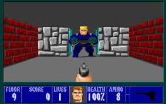
5 Videojuego Wolfestein 3D (1992)
Fue
entonces cuando John Carmack propuso la idea de un juego que involucrara la
lucha contra demonios utilizando el nuevo motor, inspirado en las partidas de
Dungeons & Dragons, y combinando con elementos de las películas Evil Dead
II y Aliens. Inicialmente, el proyecto se llamó provisionalmente "Green
and Pissed", pero más tarde se le dio el nombre de Doom, basándose en una
frase de la película de 1986 "The Color of Money".
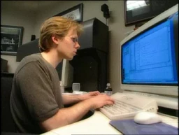
6 El programador John Carmack, cofundador de Idgames
El
equipo estuvo de acuerdo en seguir adelante con la idea de Doom, y el
desarrollo comenzó en noviembre de 1992. En ese momento, el equipo estaba
formado por cinco personas: los programadores John Carmack y John Romero, los
artistas Adrian Carmack y Kevin Cloud, y el diseñador Tom Hall. Además,
decidieron dejar de trabajar con su editor anterior, Apogee Software, y optaron
por publicar Doom por sí mismos, ya que creían que podían hacerlo mejor y
obtener mayores ganancias de esa manera.
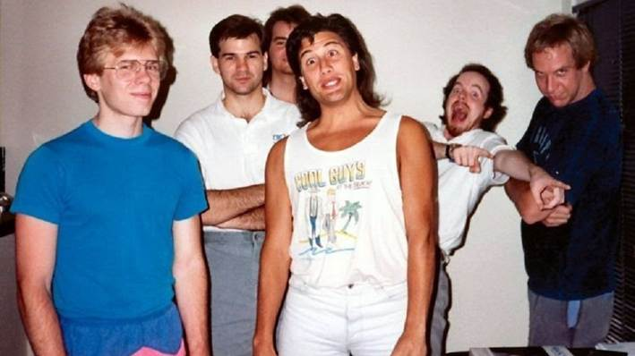
7 Equipo implicado en la creación del videojuego Doom (1993)
En noviembre, Tom Hall presentó un documento al que llamo "La Biblia
de Doom", en el que detallaba la trama del proyecto, la historia de fondo,
y las metas de diseño. El diseño original del juego representaba una visión
aterradora de ciencia ficción en la que científicos en la Luna abrían un portal
para una invasión alienígena. A medida que avanzabas a través de varios
niveles, descubrías que estos alienígenas eran, de hecho, demonios, y el
infierno constantemente permeaba el diseño de los niveles. John Carmack, sin
embargo, no solo desaprobaba la historia propuesta, sino que también rechazaba
la idea de tener una trama: "La historia en un videojuego es como la
historia en una película para adultos; se espera que esté allí, pero no es tan
crucial". En lugar de una narrativa profunda, su enfoque era la innovación
tecnológica, abandonando la narrativa de Hall en favor de un Gameplay continuo
y rápido. Aunque a Tom Hall no le entusiasmaba esta idea, el resto del equipo
se puso del lado de Carmack. En las semanas siguientes, Hall se esforzó por
adaptar la Doom Bible a las ideas tecnológicas de Carmack. Sin embargo, el
equipo se dio cuenta de que la visión de Carmack de un mundo sin interrupciones
sería inalcanzable debido a las limitaciones del hardware, lo que obligó a Hall
a revisar el documento de diseño una vez más.
A principios de 1993, id Software emitió un comunicado de prensa en el
que promocionaban Doom con la narrativa que Hall había creado. El comunicado de
prensa destacaba las nuevas características del motor 3D creado por John
Carmack, así como aspectos como el modo multijugador, que aún no se había
desarrollado. Las primeras versiones del juego se construyeron para ser
coherentes con la Doom Bible, y una versión "pre-alfa" del primer
nivel incluía la escena de introducción propuesta por Hall. Las versiones iniciales
también mantenían un sistema de puntuación similar al de los juegos estilo
arcade como Wolfenstein, pero finalmente se eliminó porque no encajaba con la
atmósfera que se buscaba para Doom. El estudio también exploró otros sistemas
de juego que finalmente descartaron, como vidas, un inventario, un escudo
secundario y una interfaz de usuario más compleja.
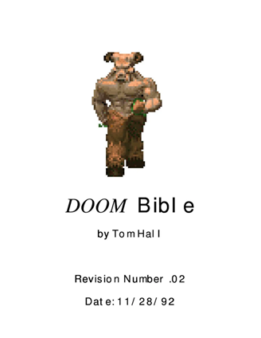
8 La Biblia de Doom creada por Hall
No obstante, la Doom Bible fue rechazada en su totalidad poco tiempo
después. Romero tenía la visión de un juego aún más brutal y rápido que
Wolfenstein, sin espacio para la trama basada en personajes propuesta por Hall.
Además, el equipo consideraba que la Doom Bible priorizaba el realismo sobre la
diversión y llegaron a la conclusión de que no necesitaban un documento de
diseño. A pesar de esto, algunas ideas se mantuvieron, pero la historia se
desechó, y la mayor parte del diseño fue eliminado. A principios de 1993, Hall
creó niveles que se incorporaron en una demostración interna. Sin embargo,
Carmack y Romero no estaban satisfechos con la arquitectura de los niveles de
Hall, que tenía una temática militar. Romero, en particular, sentía que los
diseños cuadrados y planos no aportaban innovación, y comenzó a crear niveles
más abstractos, lo que fue ampliamente aceptado por el equipo.
Hall estaba frustrado con la falta de aceptación de sus diseños y su
limitada influencia como diseñador principal. También se sentía molesto por las
peleas que tenía con John Carmack para persuadirlo de incorporar lo que él
consideraba mejoras evidentes en el juego, como la inclusión de enemigos
voladores, y esto lo llevó a pasar menos tiempo en el trabajo. Sin embargo,
otros desarrolladores percibieron a Hall como un inconveniente y alegaron que
no estaba alineado con la visión del equipo. En julio, los cofundadores de id
Software despidieron a Hall, quien aceptó un puesto en Apogee. Sandy Petersen
lo reemplazó en septiembre, tan solo diez semanas antes del lanzamiento del
juego. Petersen recordó que Carmack y Romero tenían la intención de contratar a
artistas adicionales, pero otros miembros del equipo, incluyendo a Cloud y
Adrian, se opusieron a la idea, argumentando que necesitaban a un diseñador
para contribuir a una experiencia de juego coherente. También se incorporó un
tercer programador, Dave Taylor.
Petersen y Romero se encargaron del diseño de los niveles restantes de
Doom, cada uno con enfoques diferentes: el equipo consideraba que los diseños
de Petersen eran más técnicamente variados y emocionantes, mientras que los de
Romero destacaban por su estética. Al final de 1993, un mes antes del
lanzamiento, John Carmack comenzó a implementar el modo multijugador. Una vez
que se había programado el componente multijugador, el equipo empezó a jugar
partidas de cuatro jugadores, una modalidad a la que Romero llamó "combate
a muerte," Romero luego explicaría que el modo "Deathmatch" se
había inspirado en los juegos de lucha de la época.
Doom
fue principalmente desarrollado utilizando el lenguaje de programación C, con
la inclusión de algunos elementos escritos en lenguaje ensamblador. Los
desarrolladores trabajaron en computadoras NeXT que utilizaban el sistema
operativo NeXTSTEP. El contenido de los niveles y los gráficos se almacenaron
en archivos WAD, separados del motor del juego. Esta separación permitió
modificar cualquier aspecto del diseño sin necesidad de alterar el código
subyacente del motor. Carmack diseñó esta estructura con la intención de
facilitar las modificaciones por parte de los fanáticos del juego, inspirado
por las personalizaciones que los seguidores habían realizado en Wolfenstein
3D. Además, se decidió lanzar un editor de mapas que tuviera una estructura de
archivos intercambiable y fácil de utilizar.
A
diferencia de Wolfenstein, que presentaba niveles con paredes a ángulos rectos,
el motor de Doom permitía la creación de paredes y pisos con ángulos y alturas
variadas, aunque no admitía la superposición de áreas verticalmente. El sistema
de iluminación se basaba en la modificación directa de la paleta de colores de
las superficies en función del brillo predeterminado de cada área, en lugar de
calcular cómo la luz viajaba desde las fuentes hasta las superficies mediante
el trazado de rayos. Este enfoque permitía que las texturas de las superficies
se oscurecieran o iluminaran para simular la apariencia de áreas más o menos
iluminadas, lo que también se aplicaba a las superficies distantes para crear
efectos de profundidad.
Romero
contribuyó con ideas innovadoras para aprovechar al máximo el motor de
iluminación de Carmack, programando funciones como interruptores, escaleras y
plataformas móviles. A medida que los diseños de niveles cada vez más complejos
de Romero empezaron a presentar desafíos al motor, Carmack implementó la
partición del espacio binario para seleccionar rápidamente la porción reducida
de un nivel visible para el jugador en un momento dado. Además, Taylor, además
de otras tareas de programación, incorporó códigos de trucos al juego.
Adrian
Carmack fue el artista principal en Doom, con Kevin Cloud colaborando como
artista adicional. Su enfoque consistió en diseñar criaturas terroríficas con
gráficos realistas y oscuros. Para lograr esto, adoptaron un enfoque que
combinaba distintos medios. Los artistas crearon modelos 3D de algunos de los
enemigos y capturaron imágenes en stop motion desde múltiples ángulos (entre
cinco y ocho) para asegurar que pudieran rotar de manera realista en el juego.
Estas imágenes se sometieron a un proceso de digitalización y conversión a
caracteres 2D.
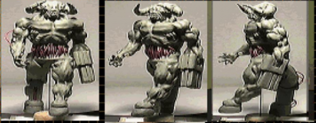
9 Proceso de Modelado de una figura 3D
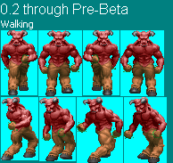
10 modelo final
Además,
Adrian Carmack confeccionó modelos de arcilla para algunos de los demonios,
mientras que Gregor Punchatz construyó esculturas de látex y metal para otros.
Las armas se crearon combinando piezas de juguetes infantiles. Además, los
propios desarrolladores se utilizaron como modelos, por ejemplo, el brazo de
Kevin Cloud representó el brazo del personaje principal sosteniendo un arma, y
ciertos detalles como las botas con textura de piel de serpiente y la rodilla
herida de Adrian se incorporaron como texturas en el juego. La portada del
juego fue obra de Don Ivan Punchatz, el padre de Gregor, quien se basó en una
descripción general del juego en lugar de referencias detalladas. John Romero
fue el modelo corporal para la portada y colaboró en una sesión de fotos para
mostrar la postura que se deseaba, permitiendo que Punchatz utilizara su imagen
como referencia.
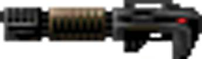
11 Pistola de plasma
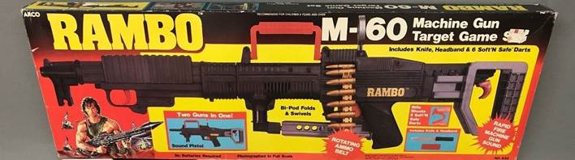
12 M-60 de Rambo, la inspiración de la pistola de plasma
En
cuanto a la música y los efectos de sonido, id Software nuevamente contrató a
Bobby Prince para esta tarea, bajo la dirección de Romero. La música fue
compuesta siguiendo estilos como el techno y el metal, con influencias directas
de canciones de bandas de metal como Alice in Chains y Pantera. Aunque Prince
originalmente favoreció la música ambiental, produjo pistas en ambos estilos
con la esperanza de convencer al equipo, y finalmente Romero decidió incorporar
ambas variantes. La música no se diseñó específicamente para niveles
particulares, ya que se compuso antes de que se completaran los niveles. La
asignación de pistas a niveles se realizó al final del desarrollo.
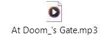
En
ejemplo más evidente es el de la canción AT Doom´s Gate que guarda una
similitud inexcusable con la canción Hooked de la banda Dri
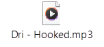
Por
otro lado, los efectos de sonido se crearon a partir de descripciones concisas
de monstruos y armas, ajustándolos para que coincidieran con las animaciones
finales. Los sonidos de los monstruos se basaron en grabaciones de ruidos de
animales, y Prince diseñó todos los efectos de sonido de manera que fueran
distinguibles en los sistemas de sonido limitados de la época, incluso cuando
se reproducían múltiples sonidos simultáneamente. También se planificó el
diseño de los efectos sonoros para que se reprodujeran en frecuencias
diferentes de las utilizadas para la música MIDI, lo que permitía que se
escucharan claramente sobre la música de fondo.
Id Software tenía previsto publicar Doom para computadoras basadas en DOS
y establecer un sistema de distribución antes del lanzamiento del juego. Jay
Wilbur, contratado como el único miembro del equipo enfocado en aspectos
empresariales, se encargó de planificar la estrategia de marketing y
distribución para Doom. Reconociendo que la empresa obtendría la mayor ganancia
vendiendo directamente a los clientes, se decidió aprovechar al máximo el
modelo de distribución "shareware". Esta elección se debió a la percepción
de que la prensa de juegos convencional no mostraba mucho interés en el juego
y, en su lugar, se optó por permitir a los minoristas de software vender copias
del primer episodio de Doom a precios flexibles, con la esperanza de incentivar
a los clientes a adquirir la versión completa directamente de id Software.
El equipo tenía inicialmente previsto lanzar Doom en el tercer trimestre
de 1993, pero finalmente requirió más tiempo de desarrollo. En diciembre de
1993, el equipo trabajaba intensamente, con varios miembros durmiendo en la
oficina debido a la carga de trabajo. Algunos, como Dave Taylor, se sentían tan
emocionados por el proyecto que llegaron al punto de desmayarse debido a la
intensidad del trabajo. A lo largo del proceso de desarrollo, id Software
proporcionó actualizaciones constantes a la comunidad a través de Internet,
además de ofrecer una vista previa exclusiva a la revista Computer Gaming World
en junio, que fue muy bien recibida. Con el aumento de la anticipación en el
transcurso del año, la empresa recibía numerosas llamadas de personas interesadas
en el juego, así como de aquellas frustradas por no haberse cumplido la fecha
de lanzamiento originalmente prevista.
La medianoche del 10 de diciembre de 1993, después de trabajar durante
treinta horas seguidas en pruebas, el equipo de desarrollo de id Software subió
el primer episodio de Doom a Internet, permitiendo a los jugadores interesados
distribuirlo por su cuenta. Sin embargo, se enfrentaron a dificultades técnicas
al intentar cargar el juego en el servidor FTP de la Universidad de
Wisconsin-Madison, dado que ya había una gran cantidad de usuarios conectados
anticipando el lanzamiento. El administrador de la red se vio forzado a
incrementar la capacidad de conexiones y luego expulsar a todos los usuarios
para liberar espacio. Una vez completada la carga treinta minutos después, se
registraron hasta 10,000 intentos simultáneos de descarga, lo que resultó en la
caída de la red universitaria.
En las horas siguientes al lanzamiento de Doom, las redes universitarias
comenzaron a prohibir juegos multijugador debido a la sobrecarga causada por la
gran afluencia de jugadores. Al día siguiente del lanzamiento, John Carmack
actuó rápidamente para lanzar un parche en respuesta a las quejas de los
administradores de redes sobre la congestión, y se requería implementar reglas
específicas de Doom para evitar que las redes colapsaran debido a la alta
demanda.
En 1995, id Software lanzó una versión mejorada de Doom para minoristas
que incluyó un cuarto episodio de niveles. Esta versión fue publicada por GT
Interactive con el nombre "The Ultimate Doom." Doom también ha sido
adaptado a numerosas plataformas diferentes por varias personas y entidades,
independientemente de id Software. La primera versión no oficial de Doom para
Linux fue creada en 1994 por el programador de id, Dave Taylor, y aunque se
alojó en los servidores de id Software, no contó con el respaldo ni el aval de
la compañía.
En 1995, Microsoft intentó contratar a id Software para llevar Doom a
Windows como parte de su estrategia de promoción de la plataforma como un
destino para juegos. Incluso, Bill Gates, el CEO de Microsoft, consideró
brevemente la posibilidad de comprar id Software. Cuando la oferta de Microsoft
fue rechazada, la empresa desarrolló su propia versión con licencia de Doom,
con un equipo dirigido por Gabe Newell. En un video promocional para Windows
95, Bill Gates fue superpuesto digitalmente en el juego.
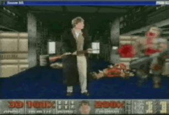
13 Video promocional de Windows 95, donde se aprecia a Bill Gates dentro de Doom
Se realizaron otros ports oficiales de Doom para diversas consolas y
sistemas, como Sega 32X y Atari Jaguar en 1994, SNES y PlayStation en 1995, 3DO
en 1996, Sega Saturn en 1997, Acorn Risc PC en 1998, Game Boy Advance en 2001,
Xbox 360 en 2006, iOS en 2009, y Nintendo Switch, Xbox One, PlayStation 4 y
Android en 2019. Algunos de estos ports se convirtieron en éxitos de ventas
incluso muchos años después de su lanzamiento inicial. Sin embargo, no todos
los ports incluyeron el mismo contenido, y algunos presentaban un número menor
de niveles. Por ejemplo, el port de 32X creado por John Carmack se lanzó con
solo dos tercios de los niveles del juego original para cumplir con la fecha de
lanzamiento de la consola, mientras que la versión para PlayStation incluyó
tanto The Ultimate Doom como Doom II.
En 1997, el código fuente de Doom se publicó bajo una licencia no
comercial y en 1999 se liberó de forma gratuita bajo la Licencia Pública
General GNU. Esto permitió que la comunidad de desarrolladores crease sus
propias versiones para una amplia variedad de plataformas, incluso algunas
inusuales como termostatos y osciloscopios inteligentes. Estos ports son la
razón detrás de la típica broma de "¿Puede correr Doom?" en
referencia a la capacidad de ejecutar el juego en dispositivos poco
convencionales.
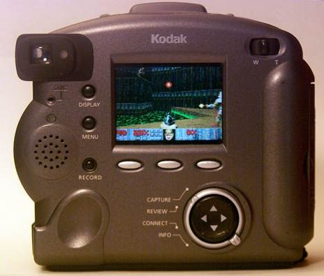
14 Doom corriendo en una cámara digital
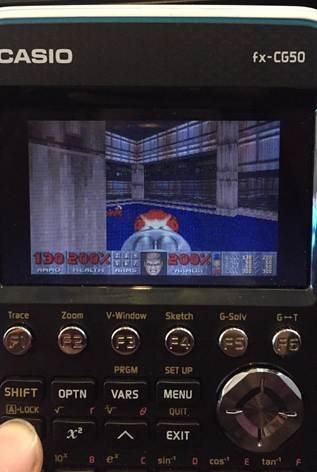
15 Doom corriendo en una calculadora
Una
característica importante del motor Doom es un enfoque modular que permite
reemplazar el contenido del juego por archivos de parche personalizados,
conocidos como PWAD. Wolfenstein 3D no había sido diseñado de esta manera, pero
los fanáticos aun así habían descubierto cómo crear sus propios niveles, e id
Software decidió impulsar este fenómeno más allá. Los editores de primer nivel.
Apareció a principios de 1994, seguido durante los años siguientes por
herramientas adicionales que permiten editar la mayoría de los aspectos del
juego. Aunque la mayoría de los PWAD contienen uno o varios niveles
personalizados esencialmente del mismo estilo que el juego original, otros
implementan nuevos monstruos y otros recursos, y alteran en gran medida la
jugabilidad; varios populares Los fanáticos han convertido películas, series de
televisión y otras marcas de la cultura popular en mapas de Doom (aunque esto
ha dado lugar a disputas de derechos de autor), incluidas Aliens, Star Wars,
Expediente X, Los Simpson y Batman. En 1994 y 1995, los PWAD estaban
disponibles principalmente en línea a través de sistemas de tableros de
anuncios o se vendían en colecciones en discos compactos. (a veces incluido con
guías de edición) en tiendas de informática; Posteriormente, los servidores FTP
se convirtieron en el principal método de distribución. Decenas de miles de
PWAD (al menos) han sido creado en total; Sólo el archivo FTP de idgames en
gamers.org contiene más de 17.500 archivos.
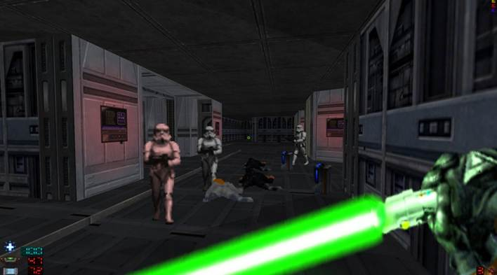
16 Xim´s Star Wars Mod, Una de las
modificaciones de Doom
La
idea de hacer que Doom fuera fácilmente modificable fue respaldada
principalmente por John Carmack, un conocido partidario del copyleft y del
ideal hacker de personas que comparten y construyen sobre el trabajo de cada
uno, y por John Romero, quien había pirateado juegos en su juventud y quería
permitir que otros jugadores hicieran lo mismo. No todos en el equipo de id
Software estaban contento con este desarrollo; algunos, incluidos Jay Wilbur y
Kevin Cloud, se opusieron debido a preocupaciones legales y en la creencia de
que no sería de ningún beneficio para la empresa.
Después de su lanzamiento en diciembre de 1993, Doom se convirtió
rápidamente en un fenómeno mundial. Este juego resultó en un éxito financiero
instantáneo para id Software, generando beneficios un día después de su
lanzamiento. Aunque la empresa estimó que solo alrededor del uno por ciento de
los usuarios que descargaron la versión shareware adquirieron el juego
completo, esta cifra fue suficiente para generar ingresos diarios notables,
llegando a US$100,000 en el primer día. Doom vendió en un solo día lo que
Wolfenstein había vendido en un mes. Para mayo de 1994, ya se habían vendido
más de 65,000 copias del juego, y se estimaba que la versión shareware se había
descargado más de un millón de veces.
En 1995, se calculaba que las ventas del primer año alcanzaban las
140,000 unidades, y en 2002, el desarrollador Sandy Petersen mencionó que se
habían vendido aproximadamente 200,000 copias en su primer año. A finales de
1995, se especulaba que Doom estaba instalado en más computadoras en todo el
mundo que el nuevo sistema operativo de Microsoft, Windows 95. Según datos de
PC Data en abril de 1998, la edición shareware de Doom había generado la venta
de 1.5 millones de unidades y generados ingresos por valor de US$8.74 millones
en los Estados Unidos. Esto llevó a que PC Data lo clasificara como el cuarto
juego de computadora más vendido en el país desde 1993. The Ultimate Doom
vendió más de 780,000 unidades en septiembre de 1999, y todas las versiones de
Doom combinadas alcanzaron un total de 3.5 millones de copias vendidas a
finales de 1999. Además de las ventas, se estima que alrededor de seis millones
de personas jugaron la versión shareware en 2002. Otras fuentes sugieren que
entre 10 y 20 millones de personas jugaron Doom en los veinticuatro meses
posteriores a su lanzamiento en 2000.
Doom fue muy elogiado en críticas contemporáneas. En abril de 1994, unos
meses después de su lanzamiento, PC Gamer UK lo nombró el tercer mejor juego de
computadora de todos los tiempos, afirmando que «Doom ya ha hecho más para
establecer la influencia arcade de PC que cualquier otro título en la historia
de los juegos» y PC Gamer US lo nombró el mejor juego de computadora de todos
los tiempos en agosto. Ganó el premio a la Mejor Aventura de Acción en
Cybermania '94. GamesRadar UK nombró a Doom Juego del Año en 1993 poco después
de su lanzamiento, y Computer Gaming World y PC Gamer UK hicieron lo mismo el
año siguiente.
Los críticos elogiaron mucho el modo de juego para un jugador: Electronic
Entertainment lo llamó "un juego en el que te golpeas el cráneo, te suda
la palma de la mano y te palpita la sangre", mientras que The Age dijo que
era "una aventura en 3D técnicamente excelente y emocionante". PC
Zone lo llamó el mejor juego de arcade de todos los tiempos, y Computer Gaming
World elogió la variedad de monstruos y armas. Computer Gaming World concluyó
que se trataba de "una actuación virtuosa". Otros críticos, aunque también
elogiaron la jugabilidad, comentaron sobre la falta de complejidad: Computer
and Video Games la encontró cautivadora y elogió la variedad y complejidad del
diseño de niveles, pero calificó la jugabilidad general como repetitiva,
mientras que Dragon elogió de manera similar la jugabilidad rápida y el nivel.
diseño, pero dijo que en general le faltaba profundidad. Edge elogió los
gráficos y los niveles, pero criticó la sencilla jugabilidad de disparos. La
reseña concluía: "Si tan solo pudieras hablar con estas criaturas,
entonces tal vez podrías intentar hacerte amigo de ellas, formar alianzas...
Ahora, eso sería interesante". podía hablar con estas criaturas" se
convirtió en una broma recurrente en la cultura de los videojuegos. El modo de
juego multijugador fue elogiado: Computer Gaming World lo llamó "la
experiencia de juego más intensa disponible", y Dragon lo llamó "la
mayor descarga de adrenalina disponible en las computadoras". PC Zone lo nombró como el mejor juego multijugador disponible, además
del mejor juego de arcade.
Los críticos elogiaron los gráficos 3D y el estilo artístico; Computer
Gaming World calificó los gráficos como notables, mientras que Edge dijo que
"hizo avances serios en lo que la gente esperará de los gráficos 3D en el
futuro", superando no sólo a los juegos anteriores sino también a los
juegos que aún no se habían lanzado. ¡Calcular! y Electronic Games también
calificó los gráficos como excelentes y diferentes a los de cualquier otro
juego. PC Zone, Dragon, Computer Gaming World y Electronic Entertainment
elogiaron la atmósfera y la dirección de arte, diciendo que el diseño de
niveles, los efectos de iluminación y los efectos de sonido se combinaron para
crear una experiencia "claustrofóbica" y "de pesadilla".
Computer Gaming World también elogió la música, al igual que The Mercury News,
que la calificó de "siniestra como el escenario".
En un comunicado de prensa del 1 de enero de 1993, id Software escribió
que esperaban que Doom fuera "la causa número uno de disminución de la
productividad en las empresas de todo el mundo". Esta predicción se hizo
realidad al menos en parte: Doom se convirtió en una molestia en los lugares de
trabajo, ocupando el tiempo de los empleados y obstruyendo las redes
informáticas con el tráfico causado por las partidas deathmatch. Intel y la
Universidad Carnegie Mellon, entre muchas otras organizaciones, supuestamente
formularon políticas específicamente para Prohibir el juego de Doom durante las
horas de trabajo. Doom es un videojuego polémico debido a sus altos niveles de
violencia, sangre e imágenes satánicas. Ha sido
Criticado repetidamente por organizaciones cristianas por su simbolismo,
y en su día generó miedo de la tecnología de realidad virtual. El juego volvió
a ser noticia nacional en 1999, cuando se vinculó con la masacre de Columbine
High School debido a la obsesión de uno de los implicados con el juego.
Wikipedia contributors.
(2023, 9 noviembre). Doom (1993 video game). Wikipedia.
DoomWiki.org. (2023, 2 noviembre). Doom.
1 Pantalla de inicio de Doom (1993)
2 Captura del
Episodio "Knee-Deep in the Dead"
5 Videojuego Wolfestein 3D (1992)
6 El programador John Carmack, cofundador de Idgames
7 Equipo implicado en la creación del videojuego Doom
(1993)
8 La Biblia de Doom creada por Hall
9 Proceso de Modelado de una figura 3D
12 M-60 de Rambo, la inspiración de la pistola de
plasma
13 Video promocional de Windows 95, donde se aprecia a
Bill Gates dentro de Doom
14 Doom corriendo en una cámara digital
15 Doom corriendo en una calculadora
16 Xim´s Star Wars Mod, Una de las modificaciones de
Doom
{kind=link}